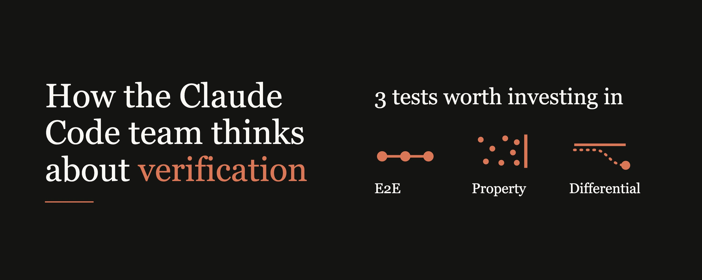
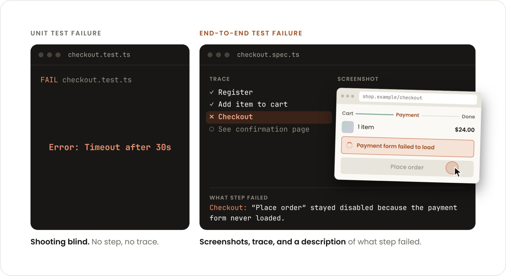
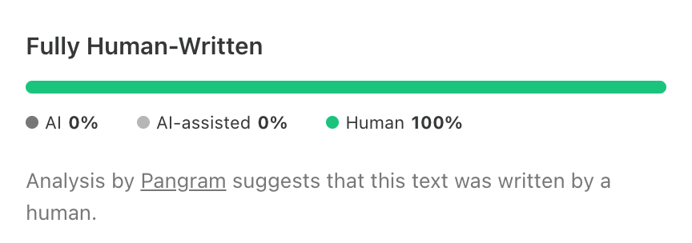

有证据，才能把更多工作交给 Claude
端到端测试、属性测试和差分测试，让编程 agent 用证据核对自己的工作。Claude Code 团队同时要让这些验证器保持诚实。
官方原文 X 帖 X Article 精读版（待加密，全文对照） 全文讲解约 18 分钟
补充：X Article 是这篇官方文的同文转载，不是另一套论述。官方发布只有日期 2026-11-16，没有时刻。X 发帖时间见后文，不写进官方日期。

没有验证闭环，你只能同时盯一两个 Claude
作者是 Addy Osmani，职衔 Member of Technical Staff。官方日期是 2026-11-16。副题里的三类是 end-to-end、property、differential。原文 URL 在 claude.dev 这篇博客。出版社是 Anthropic，栏目是 Engineering。这些元数据在 X 的 plain_text 里不出现，标题在 X 的 article.title 字段。
在 Claude Code 团队，代码的绝大部分，约 90%，由 Claude 编写，并由 Claude 评审。到了这个规模，给 agent 配上能用证据核对自己工作的办法，就变得极其重要。
链接文字是 reviewed by Claude。它指向团队此前的代码审查文章。那篇文章不是本篇原文。
没有验证闭环时，你实际上只能同时跑一两个 Claudes，因为每件事都要自己查。有了它，就可以并行跑几十个到上百个。
- 没有 Verification loops：只能同时看一两个。
- 有了闭环：并行数量可以到几十个、上百个。
在结构化文件生成的内部试验里，让一个单独的评分器按评分标准检查 Claude 的产出，相对标准提示循环，任务成功率最多提高 10 points。最大的增益出现在最难的题上。这个数字不覆盖全部编程任务。
评分器是另一套检查，不和写代码的那次提示混在一起。评分标准是它对照的 rubric。作者把「给 agent 一种核对产出的办法」视为提高质量的有效途径。
从前很贵的验证，测试、基准、规格、真正的 end-to-end 运行，现在向 agent 要一次就便宜了。agent 能很快生成测试、基准和规格。生成之后，它们作为软件运行，可以频繁跑，不必再花很多额外 tokens。
也可以用结果把这个闭环收上，提高 agent 在该任务上的表现。例如，一个检查日志里有没有用户数据的测试反复失败，就可以加一条 hook，或在 CLAUDE.md 里写更明确的规则，避免以后再犯。作者加了括号：这大多能让问题不再出现。
若验证对又快又好的代码是关键，该用哪些测试，又怎么接到流水线里？这篇回答这两问，并写出 Claude Code 团队自己的做法。
补充：文中链接的其他官方文章不是用户所说的这篇原文。代码审查篇的作者还有 Morgan Westlee Lunt、Qing Wang，日期 2026-10-15。verification loops 那篇作者是 Delba de Oliveira，日期 2026-07-22。它们只作出处，不整篇并进本页。采集时 blog 链接会转到 resources 路径：verification loops 现用地址，Managed Agents 现用地址。正文仍用作者写下的 URL。
不稳定、太慢、太重，会把 agent 训练坏
不论你选哪种测试，都有几种失败方式要避开。作者接着给出他认为最值得投入的 3 种。
测试若不稳定，你会把 agent 训练成再跑一遍，而不是修失败的代码。测试若慢，agent 在一批改动里做的测试更少，问题更难定位。Heavier tests，也就是更重的测试，最好在你提交改动之前部署。
- 不稳定：失败不一定是代码错了，agent 学到的是再跑。
- 太慢：一批里测得更少，更难把问题钉死。
- 太重：放到提交之前，而不是每次中间步骤都扛着跑。
只选一种时，先选端到端
端到端测试，也就是 E2E / end-to-end，很难被骗过。整条功能要么成立，要么不成立。它有明确的完成标准，并能具体告诉你哪里坏了。
either the whole feature works or it doesn't
Addy Osmani，E2E tests出处：Addy Osmani · E2E tests
![Unit test failure vs. end-to-end test failure. Left: checkout.test.ts shows only “FAIL checkout.test.ts / Error: Timeout after 30s”, captioned “Shooting blind. No step, no trace.” Right: checkout.spec.ts shows a step trace (Register, Add item to cart, Checkout failed, See confirmation page not reached), a screenshot of shop.example/checkout with “Payment form failed to load” and a disabled “Place order” button, and “What step failed: Checkout: ‘Place order’ stayed disabled because the payment form never loaded”, captioned “Screenshots, trace, and a description of what step failed.”](img/official-fig-A-e2e-vs-unit.png)
图说：单元测试可能只显示 Error: Timeout after 30 seconds。end-to-end 测试可以给出截图，并说明坏在哪里。可能只显示超时，不表示端到端也会只给这一句。

Shooting blind. No step, no trace.
FIG A 左栏底注出处：Addy Osmani · FIG A
单元测试更快，也更不容易不稳定。可是它们可以通过，功能仍然是坏的。因为 agent 和测试都不理解完整任务。
E2E 要给 agent 手和眼睛，让它碰到正在运行的真实系统。可以用一个 skill 启动、驱动并检查应用。工具包括 CDP、模拟器，或 API harness。
功能地图可以当 agent 的向导和评分标准。它通常从用户视角列出功能，并写路径、键盘快捷键、选择器和预期结果。
属性测试去打人容易漏掉的边界
很多测试基于你想到的可能出错之处。Property tests 看人容易漏掉的边界。agent 也往往在这些地方失败。
库按语言分开：fast-check 用于 JS/TS，Hypothesis 用于 Python，proptest 用于 Rust。作者写了 etc.，这里不补第四个库的名字。
出处：Addy Osmani · Property tests
四类都要留着。Round-trip encoding：编码再解码，得到原来的 X，解析和序列化同样适用。Invariants：必须始终为真，例如账户余额永远不能变成负数。Idempotency：迁移、规范化或重试做两次，效果与做一次相同。Equivalence：优化后的代码与朴素但正确的代码得到同一结果。
Property 库用的边界情况，不是用写原始代码的那个 agent 的同一偏见造出来的，所以能让 agent 保持诚实。规格已经偏离生产行为、不再能当验证依据时，它们对重写特别有帮助。
补充：这四条的措辞，X plain_text 与官方相同。官方是加粗列表，X 没有列表符号，也没有加粗。这是排版差异，不是另一套属性。
迁移时，旧系统就是 oracle
Differential tests 特别适合大规模迁移，而且预期功能保持不变。作者把 large-scale migration 链到另一篇迁移文章。那篇不是本篇原文。
关键是用随机生成的输入，或一份生产流量样本。还要规范化无关因素，例如空白。新环境本来就该和旧环境不同的地方，保留一份已批准变更清单。
这篇讲怎么验证，不是把审查篇再说一遍
Claude Code 团队以前写过 Anthropic 的代码审查怎么做。这篇要往下讲他们怎么验证自己的工作。审查篇被引用，仍不是本篇原文。
把改动真正跑起来，比只看测试更要紧
把应用端到端跑起来，比测试更要紧。你不会不在模拟器里试过，就发出一项 iOS 改动。Claude 也一样。
Claude 可以像人或 QA 工程师那样测整个应用。网页改动用 Claude Chrome extension。移动端用 iOS 或 Android MCP。桌面用 computer use。后端把服务在本地跑起来。
出处：Addy Osmani · Verification means running the change
把启动模拟器或运行应用的办法写成名叫 verify 的 skill。放在仓库的 .claude/skills/ 里，尽量靠近相关代码，需要几个就放几个。Claude 会在提交改动之前使用 verify。然后让它变快、变可靠：让 Claude 迭代并做压力测试。它是你的冒烟测试套件，要稳。
给 Claude 一条端到端冒烟测试自己改动的路，结果会好得多。你会看到它迭代，并更快抓住真实错误，方式像人。团队在 Anthropic 几乎就是这样测试全部改动。
同一项检查失败三轮，就停下来交给人
没有人能读每一处改动，所以失败是决定哪里需要人的一种办法。Claude 跑检查，并试着修掉失败项。某一项检查三轮之后仍然失败，Claude 就停下来，交给人。
代码的主人写检查，并写明为什么找人
Code owners，也就是拥有这段代码的人，给它写检查，并打磨到它标出的，就是主人自己会标出的。检查把评审者叫进来时，应该说明为什么，这样他们不必从 diff 里自己推。
39 项清单只查这次 diff 对上的几项
团队维护一份 Reliability 清单，共 39 项。每一项都有能从 diff 读出的触发条件、一项检查，以及背后的事故或 PRs。其中一项是 “--resume loads old transcripts.” 会话存储或消息类型变了，就要问新字段能否安全加载，因为更旧的 transcript 里没有它。
--resume loads old transcripts.
Addy Osmani，可靠性清单中的一项出处：Addy Osmani · Reliability checks
Claude 读 diff，仅检查触发条件对上的项。通常是 3 到 10 项。这样没有人必须记住过去的故障。
先调主评审，不靠再叠一个更贵的
团队并不靠叠更多评审者来改进审查。在主评审之上再加一个更贵的第二评审者，往往比调好主评审更差。他们用 REVIEW.md 写明，对这段代码评审者该注意什么。
审查和验证的各轮应该互相接上。每一轮指向更早轮次和过去失败的上下文，而不是 re-checking，从头把一切再查一遍。这样更便宜，也找得更多。
改动不能修改评判自己的检查
如果一处改动能修改评判它的检查，这项检查就是坏的。Code Review 从 base 或默认分支读取 REVIEW.md，从不读取 pull request 里的改动。Claude Code 团队保证给改动把门的规则，放在这份改动改不到的分支上。
A passing review on an out-of-date commit means nothing.
Addy Osmani，Changes can't modify their own checks出处：Addy Osmani · Changes can't modify their own checks
Claude Code 团队把审查留给提交。若有人在审查进行时还在推，审查结果就不再有用。对一份过期提交的通过，什么也说明不了。
团队也先跑便宜的检查。agent 若没在本地测过就推，就花掉了共享的审查和 CI 时间，而它本可以自己抓住这个 bug。在这个团队，Claude 在打开 pull request 之前跑测试、构建和 linter。可以用 hook 在 Claude 结束时跑测试，或把通过的测试套件写成 /goal。
新门禁先 observe，再 enforce
Observe mode 会记下本来会被拦住的提交，这样可以复查误报，并保证没有人被影响。
Enforce mode 会拦住提交。任何提交都可以在说明里写为什么没做验证。同一会话里提交若已被拦住两次，下一次会放行，免得 Claude 卡住。Claude Code isn't perfect.
Claude Code isn't perfect.
Addy Osmani，enforce 模式出处：Addy Osmani · Start a new gate in observe mode
补充：上面的模拟器是教学示例，用来把三轮上限和 observe / enforce 走一遍。对话里的结账句子来自 FIG A 的画面，不是一次真实事故的日志。
用真正出过事的改动来考这些检查
团队也定期审查评审者。Claude Code 团队在 Test your checks 这一节追踪三件事。
- 多少已合并的改动后来被回滚了。
- 维护者在合并前拒绝了多少改动。
- 一份 size-matched、一直保持干净的改动子集。
也可以做正式评估。代码审查那篇里，Code Review 团队用以往的事故和回滚建评估。每个例子都把仓库恢复到当时审查时的状态，并给 one-sentence 的一句答案，写明 bug 是什么。只有正确描述了该 bug 的发现才得分。他们用已合并且稳定的改动做对照，防止 over-flagging。调参集从用来评估系统的固定测试集里拆出去。
他们把原始发现、验证之后（post-verification）、最终审查的召回率分开评估。这样能看出系统是不是丢掉了已经找到的 bug。把这三步合成一个 end-to-end 分数的评估，抓不住这个差别。
除了是否有效，另一维是这处改动有多重要。好的评审者会抓住大多数技术上正确的问题，但人关心的是这个 bug 是 must-fix（必须修）、should-fix（应该修），还是一处 nit。
Code Review 有同样的想法。它会把事情标成 Important、Nit 或 Pre-existing。pre-existing 表示评审者不该让作者为已经存在的 bug 负责。
Claude Code 团队把召回调高，直到下一步改进会是对评估过拟合，而不是真的抓住 bug。
漏掉的案例写成规则，再定期修剪
Claude Code 仓库里有两种办法，把错过的案例变成规则。第一种：从人工代码审查评论和 PR 回滚里抽模式，找出共同问题。
出处：Addy Osmani · Turn misses into rules
要成为潜在规则，这些问题必须至少出现在两份 PR 里，并且能从 diff 识别出来。三个 agent 会试着推翻它们。然后由人在一份 PR 里审查并批准。
第二种是用三个 bug finder 重放一份与已知事故相关的 PR。至少两个找到这个 bug，它才是可检测的 bug。小改动的 diff 上仍被漏掉，就值得写成 REVIEW.md 里的一条规则。
出处：Addy Osmani · Turn misses into rules
不稳定测试得到同样的处理。Claude 不能跳过它们，不能加 sleeps，也不能重试到通过。找不到根因，就删掉这条测试，并写下为什么。
规则也要清理。测试套件、验证步骤和 .md 文件，你若放任，它们只能变长。所以团队按例行把它们收拾一遍。
人的工作变成定义完成，并审查证据
给 agent 一条带强反馈的验证之路，差别就在这里。把验证层当成任何其他系统来对待。让它处在被它评判的改动碰不到的地方。用对你重要的 bug 给它们打分。它们漏掉什么，就把教训写下来，使这件事不会再发生超过一次，并修剪这些教训，让它们仍然值得跑。
这样做之后，你的工作就从读每一份 diff，转到定义「完成」是什么样，并审查证据。这才让你能同时跑很多个 Claudes。
补充：官方这一节的标题是 Good tests, good results，没有句号。X plain_text 写成 Good tests, good results.，多一个句号。标题下的两段论述相同。
X 是同一篇的转载，全文在精读里
以下分开记。X Article 的 article.plain_text 与官方是同文转载，精读里按非空行排开。发帖的 UTC 时刻写成 2026-11-17T07:20:29.000Z。官方日期仍然只有 2026-11-16，没有时、分、秒。
plain_text 有 70 行非空正文。entities.code 无此字段，代码实体为 0。X 正文没有围栏代码。公开页不把这 70 行再讲成第二篇。精读按原顺序保留全文，并在每一行旁注明它与官方对应段的关系。
补充：X API 的内链只有 URL 字符串，没有 start/end。页内锚点文字是按官方 Markdown 推断的，不是从 X 的偏移读出来的。推断过的 15 处与官方内链是同一批 URL，12 个不重复地址。不把推断写成 X 接口直接给出的位置。
Pangram 徽章的段落位置，采集时不能确定
X 正文第二张是 Pangram 徽章。API 把它列为第二张正文 media，没有给出段落偏移。位置未确认。本页不把它插进某一段后面。

官方分享卡不是正文图，也不是 X 封面
官方 og:image 用于分享预览。正文不嵌这张图。它不是 X 封面，也没有三测试图标。

用五个新场景检查这几条规则
补充：小测不写入「学完了」。学完只由页面上的「学完了」按钮决定。没作答不能当成学完。
正文里的每个 URL 都留在这里
- How the Claude Code team thinks about verification
- 官方 Markdown。补充：.md 与页面同路径。
- How the Claude Code team does code review
- Building verification loops in Claude Code with skills
- Claude Managed Agents
- How Anthropic runs large-scale code migrations
- Chrome DevTools Protocol
- fast-check
- Hypothesis
- proptest
- Customize Code Review
- Hooks
- /goal
- Read and request reviews on a pull request
- X 帖
- X Article
- 官方 og.png